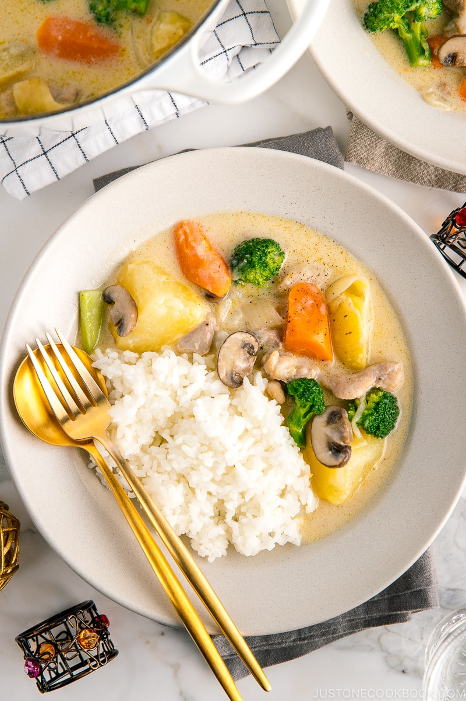
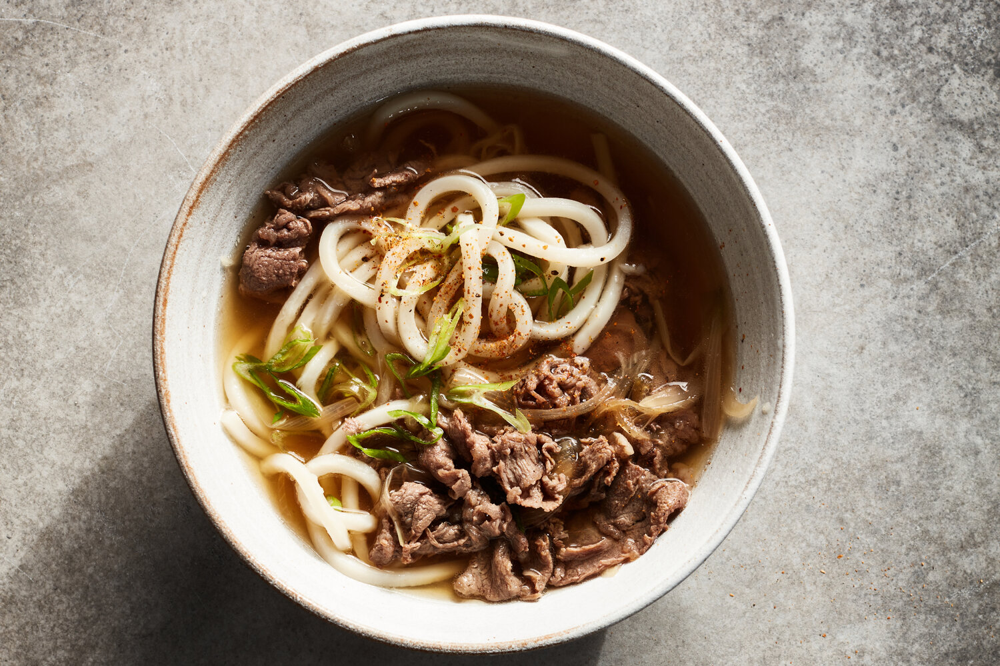

cream stew
Ingredients: Meat (chicken legs or bacon or salmon or shrimp or any meat), vegetables (onions, potatoes, carrots, broccoli, mushrooms, or any vegetables) Seasoning: light cream or milk, flour, salt, chopped parsley, pepper
Fry meat and onions in hot oil Add vegetables and sprinkle with flour and mix well Add light cream or milk or both, add salt and black pepper Wait for the food to cook and the milk to collect juices Sprinkle chopped parsley and black pepper
Spare ribs soup

Soak the pork ribs in water and flour for 15 minutes and wash Add water, green onions, ginger, cooking wine, two star anise, and three fragrant leaves to the pork ribs. Bring to a boil over high heat and cook for two minutes. Skim off the foam. Discard water and spices Lightly fry the pork ribs in peanut oil Pour in water, add four-material soup dumplings (Poria, Gorgon seeds, lotus seeds, yam), add sweet corn or sweet carrots, yam or white radish or winter melon, and red dates. Bring to a boil over high heat, then simmer over low heat for more than 1 hour. After cooking, add salt, green onions, and black pepper
Beef Stir-fried Udon (Japanese Ginger Sauce Version)
Cut the ginger into thin strips/mince and add more A little shredded onion A little shredded green pepper Bowl juice: 2 tablespoons ginger syrup 1 spoon of mirin 1 spoon light soy sauce 1 spoon dark soy sauce 0.5 spoon oyster sauce 1 spoonful of sake, cooking wine or red wine Boil udon noodles in cold water Beef slices become discolored when blanched First stir-fry the ginger and vegetables, then stir-fry the beef together. Add some wine and then add the noodles. Sprinkle sesame seeds and black pepper